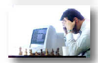
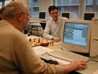
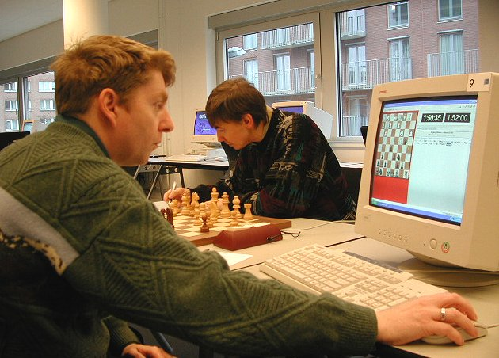
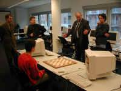
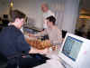
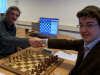
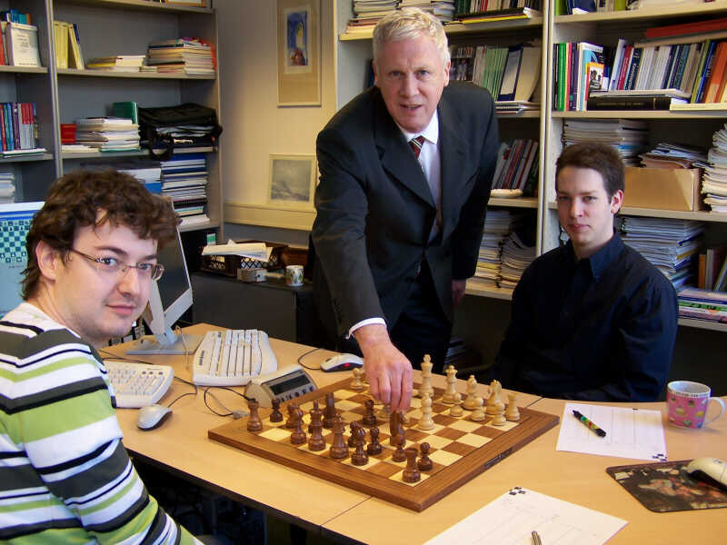

pgn Computer Chess
Matches
The founding father of the Chess Events
Maastricht Foundation was Maarten van Gils. Later the board became: Jos Uiterwijk chairman,
Jan van Reek secretary and Daniel Brorens treasurer. Eric van Reem,
Geurt Gijssen and Hans Adriaanse often participated in the
organization.
Three matches were traditional computer versus
grandmasters events.
|
2001: John van der Wiel versus
Rebel Century 3.0
Van der Wiel lost for the first time
against a computer in round four. The match ended in a 3½-2½
victory for Rebel.
2002: Loek van Wely versus Rebel
Century 4.0
Rebel defeated a grandmaster by a
straightforward attack for the first time in game 3. The
match ended in 2-2.
2003: Evgeny Bareev versus HIARS X
Bareev applied an
anti-computer strategy and the match ended in four draws.
|
|
 |
 |
 |
 |
| Van der Wiel |
Schröder and Van
Wely |
Uniacke and Bareev |
Baramidze, Gijssen, Stellwagen |
Five special computer matches followed.
2004: David Baramidze and Daniel Stellwagen
play complete chess
The young players were allowed to use the computer during
the game. Classical time limits were applied. Stellwagen won by 2½-1½.
2005: Loek van Wely and Daniel Stellwagen play
complete chess
Van Wely and Stellwagen could use the computer during the game.
Random chess was applied during the last two games. Stellwagen won
by 3-1.
2006: Zhaoquin Peng and Tea Lanchava play
complete chess
Peng and Lanchava played two gambits and two
random chess games. They used the computer. Both of them won twice.
2007: Erwin L'Ami versus Zappa Reykjavik
L'Ami had full time and Zappa a reduced contemplation time. The
match resulted in two draws.
2008: Erwin 'Ami and Daniel Stellwagen play complete chess
They had to play sharp open games and were
allowed to use computers. The match ended equal.
|
 |
|
 |
 |
| Stellwagen, Van
Reek, Van Wely |
Lanchava and Peng |
Uiterwijk and L'Ami |
L'Ami, Van den Herik, Stellwagen |